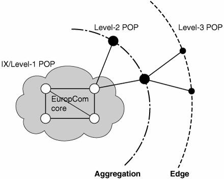
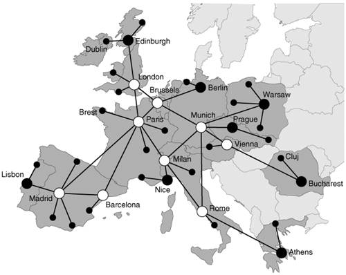

Network EnvironmentEuropCom is a fictitious pan-European data and long-distance voice MPLS service provider, with POPs in France, the United Kingdom, Spain, Portugal, Italy, Germany, Belgium, Greece, Poland, the Czech Republic, Austria, and Romania. EuropCom has been providing a set of IPv4 services over the past five years to different market segments, residential customers, and businesses. Two of these IPv4 services represent the principal revenue generators: layer 3 MPLS VPN and Internet access. Both services are MPLS switched through the EuropCom integrated MPLS core backbone. EuropCom network uses a classical architecture with three levels of POPs, as illustrated in Figure 13-1. Figure 13-1. EuropCom POP Architecture Level 1 (L1) POPs form the backbone of the network. They are interconnected over OC-192 and OC-48 links. L1 POPs are also Internet exchanges, connected to major European ISPs. The L1 POPs connect to level 2 (L2) POPs over OC-48 links. L2 POPs aggregate level 3 (L3) POPs over OC-48 and OC-3 links, depending of the size of the L3 POP. Figure 13-2 presents EuropCom network in a geographical context. Figure 13-2. EuropCom Geographical TopologyIn the EuropCom network, Provider Edge (PE) routers are dedicated to either the Internet or layer 3 MPLS VPN access. The EuropCom backbone has the following characteristics:
EuropCom customer base covers the full range of typical ISP customers:
|